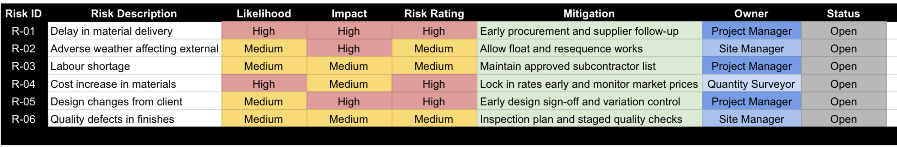
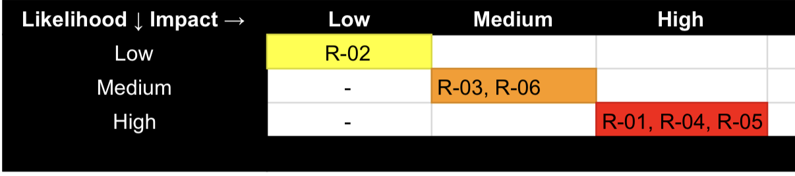
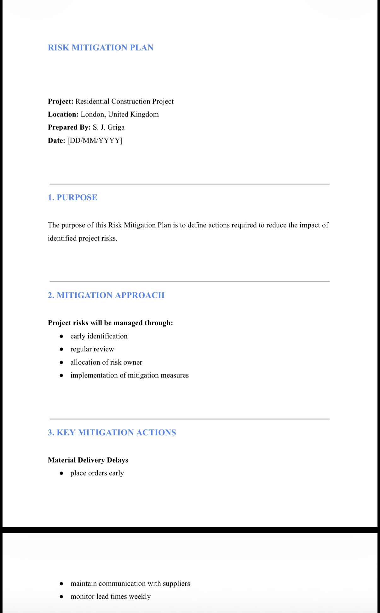
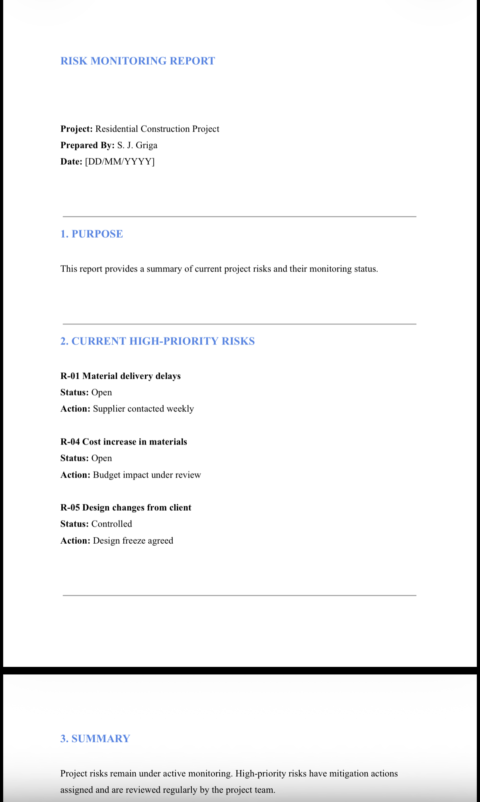

Project Overview
This portfolio simulation demonstrates my ability to identify, assess, mitigate, and monitor project risks during a residential construction project. The project focuses on structured risk management through a risk register, assessment matrix, mitigation planning, and ongoing risk monitoring.
Project Objectives
- Identify key risks affecting project delivery
- Assess likelihood and impact of each risk
- Prioritise risks using a structured matrix
- Define mitigation actions and assign ownership
- Monitor high-priority risks throughout the project lifecycle
Scope of Works
- Risk identification during pre-construction and delivery stages
- Assessment of project risks affecting time, cost, and quality
- Development of a project risk register
- Preparation of a visual risk assessment matrix
- Mitigation planning and ongoing monitoring of critical risks
Key Deliverables
Risk Register
I developed a structured risk register to record project risks, assess their likelihood and impact, assign ownership, and define mitigation measures.
This created a controlled record of open risks affecting time, cost, and quality, and ensured that responsibility for managing each risk was clearly allocated.
The register supported proactive project control by allowing risks to be tracked throughout delivery rather than identified only when issues had already materialised.
- Recorded project risks systematically
- Assigned risk owners and mitigation actions
- Tracked open risks throughout delivery

Skills demonstrated: risk identification, ownership allocation, mitigation planning
Risk Assessment Matrix
I prepared a risk assessment matrix to prioritise identified risks based on their likelihood and impact, helping focus management attention on the most critical threats to delivery.
The matrix provided a clear visual representation of risk severity, making it easier to distinguish high-priority items from lower-level risks.
This supported better decision-making by directing mitigation effort towards the risks most likely to affect project outcomes.
- Assessed likelihood and impact visually
- Highlighted high-priority risks clearly
- Supported prioritisation of mitigation effort

Skills demonstrated: risk prioritisation, visual risk assessment, decision support
Risk Mitigation Plan
I prepared a risk mitigation plan to define the actions required to reduce the likelihood and impact of key project risks affecting cost, programme, and quality.
The plan assigned mitigation actions to specific risks and allocated responsibilities to relevant project team members to ensure accountability.
This supported proactive risk control by moving beyond risk identification and setting out clear actions to manage threats before they affected delivery.
- Assigned mitigation actions to key risks
- Allocated responsibilities to project team members
- Supported proactive risk control during delivery

Skills demonstrated: mitigation planning, proactive control, responsibility allocation
Risk Monitoring Report
I used a risk monitoring report to review current high-priority risks, confirm control actions, and maintain oversight of project threats during delivery.
The report provided a structured way to update risk status, review whether mitigation actions were working, and highlight any changes requiring further attention.
This supported ongoing project control by ensuring risk management remained active throughout the project rather than being treated as a one-off exercise.
- Monitored high-priority risks through reporting
- Reviewed and updated actions regularly
- Supported ongoing project control

Skills demonstrated: monitoring, reporting, active risk control
Project Outcomes
Project risks were identified and prioritised using a structured methodology, improving visibility of threats affecting delivery.
High-risk items were supported by clear mitigation actions, with ownership assigned across the project team to improve accountability.
A monitoring process was established to keep risk management active throughout the project lifecycle and support ongoing project control.
- Identified and prioritised project risks systematically
- Supported high-risk items with clear mitigation actions
- Assigned risk ownership across the project team
- Established monitoring for ongoing project control
Lessons Learned
This project reinforced that early identification of project risks improves control, planning, and decision-making.
It also highlighted the value of risk matrices in helping prioritise management effort and focus attention on the most significant threats.
Clear ownership and continuous monitoring are essential, as mitigation actions are only effective when responsibility is allocated and reviewed throughout delivery.
- Early risk identification improves control and decision-making
- Risk matrices help prioritise management effort effectively
- Mitigation actions require clearly assigned ownership
- Risk monitoring should continue throughout the project
Tools & Methods Used
I used Excel and Google Sheets to prepare the risk register and risk matrix, allowing risks to be identified, prioritised, and tracked in a structured format.
Microsoft Word was used to prepare the mitigation plan and monitoring report, supporting clear documentation of actions, responsibilities, and ongoing review.
A structured risk management process based on likelihood and impact assessment improved consistency and supported more effective project control.
- Excel / Google Sheets (Risk Register, Risk Matrix)
- Word (Mitigation Plan, Monitoring Report)
- Likelihood / impact assessment method
- Structured project risk management process
Why This Project Matters
This project demonstrates practical project risk management in a structured and proactive way.
It shows how I identify risks, assess their impact, prioritise them visually, define mitigation actions, and monitor them during delivery to support successful project outcomes.